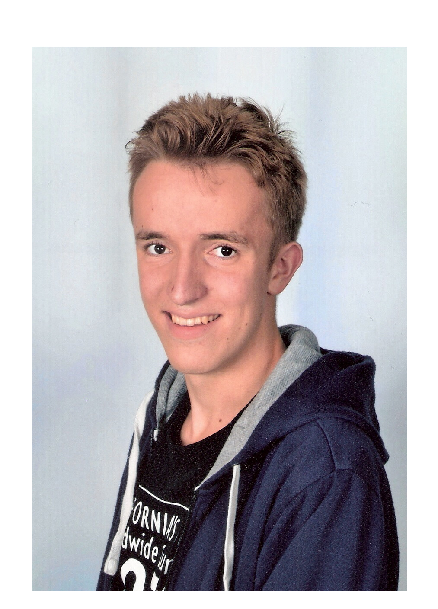
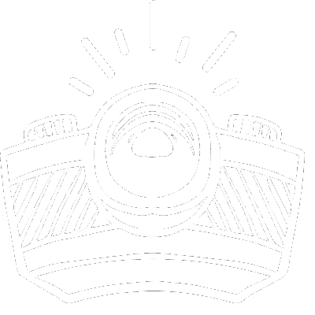

Über mich
Dave Kock,
18 Jahre jung aus Vorarlberg/Österreich
Hobbys: welt bereisen, Vlogging, Programmieren, aha Multimedia-Team
Ausbildung: Mittelschule und nachher eine Lehre im eizenhandel Lebensmittel
Wieso machst du ESK?: Ich wollte einfach mal weg von zuhause und etwas komplett neues erleben, da hat sich das gut angeboten.
Mein Youtube Kanal
Wann kommen Videos? 2x die Woche immer Dienstags und Freitags um 13 Uhr! Mehr videos können natürlich immer kommen ;)
Was kommt auf dem kanal? Auf meinem Kanal kommen vlogs über den Europäischen Solidaritäts Korps
Was ist dein Equipment? Ich filme mit einer Canon PowerShot G7x Mark II und einer Gopro 4

Neustes Video
Videos kommen Dienstag und Freitag um 13 Uhr
dada